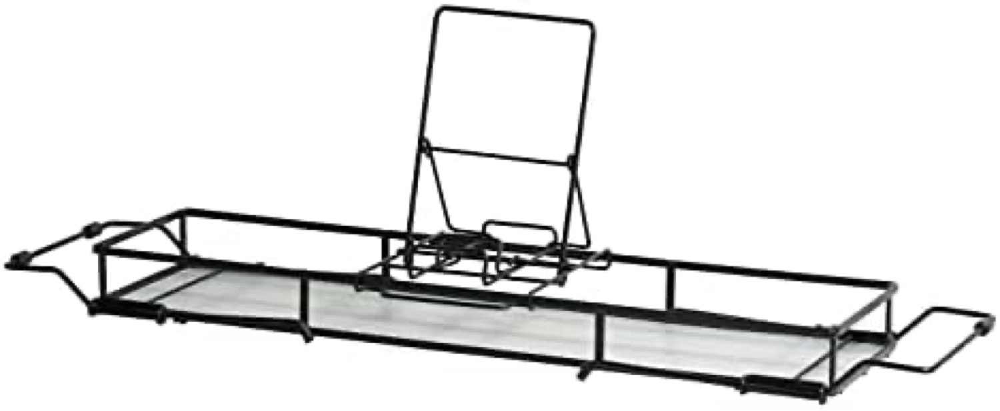
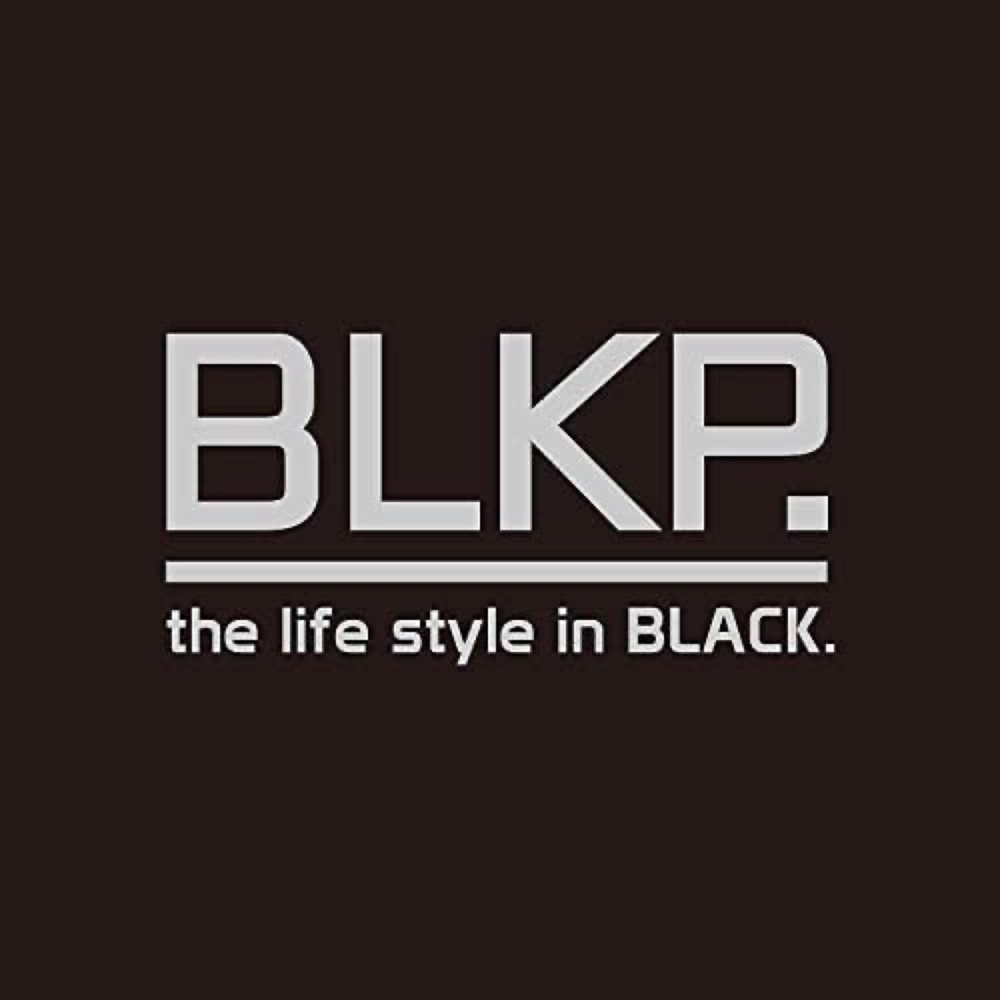
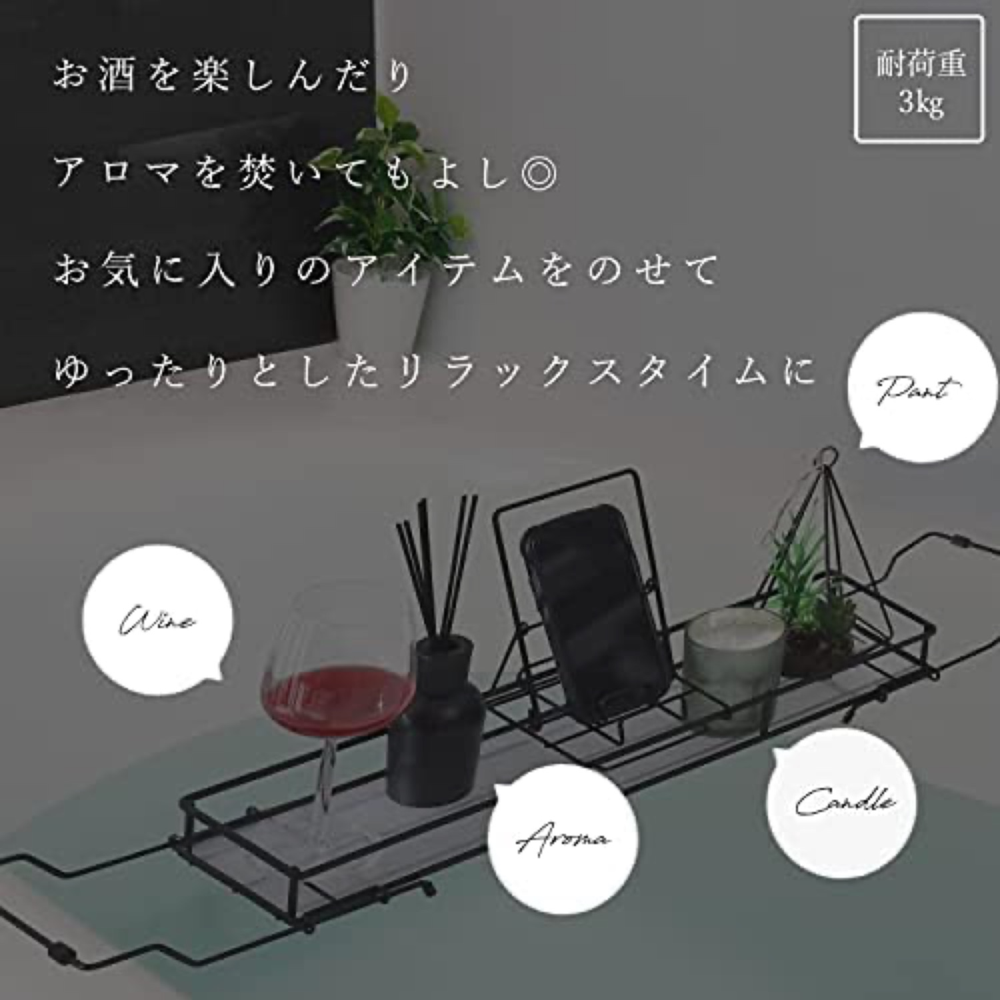
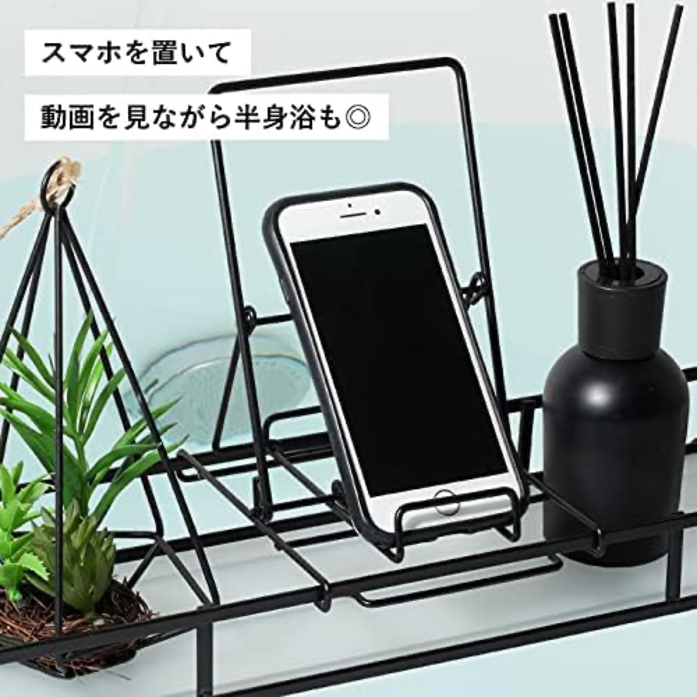
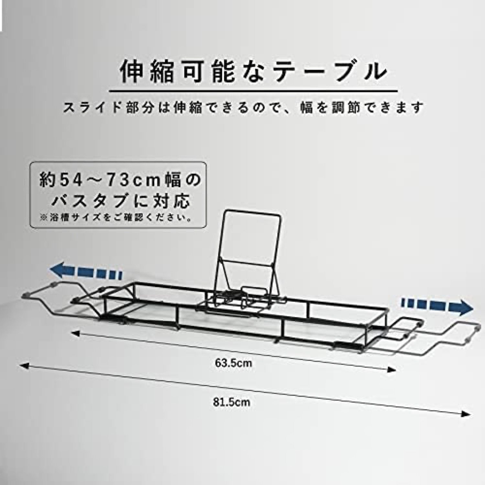
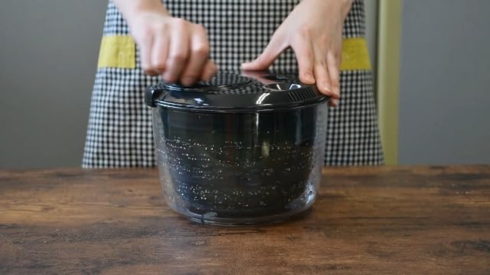

パール金属 is an established Japanese metal-goods maker. This online-exclusive black "BLKP" tray is cheap and functional (¥2,573, 4.0★, sold by Amazon), but it carries no aesthetic or material story, and its negative tail is the widest of the wood/metal set.パール金属は老舗の国内金属メーカー。このオンライン限定の黒「BLKP」は安価で機能的（¥2,573・4.0★・Amazon販売）だが、美しさや素材の物語はなく、木/金属勢で最も負の尾が広い。






Verdict: a functional commodity. Six images and a Brand Store from a known maker, sold by Amazon. No video, no desire, and a "limited black" gimmick standing in for a real product story.評価：機能的なコモディティ。既知メーカーの画像6＋Brand Store、Amazon販売。動画も欲求もなく、「限定ブラック」の演出が物語の代わり。
Cheap and brand-backed, but no warmth, no video, and the widest negative tail of the premium-leaning set (31% in 1-3★).安くブランド裏付けもあるが、温かみも動画もなく、上位寄りセットで最も広い負の尾（1〜3★が31%）。
Sold by Amazon with a パール金属 Brand Store; competes on price + a recognized domestic kitchenware name, with little need for heavy Sponsored spend.Amazon販売＋パール金属のBrand Store。価格＋認知ある国内調理器具名で戦い、大量出稿は不要。
A trusted name moves budget metal, but cannot lift its rating. Brand alone is not enough without a satisfying product.信頼名は廉価金属を動かすが評価は上げられない。満足する製品なしにブランドだけでは不足。
Slow-to-moderate velocity for a cheap, brand-backed metal tray.安価でブランド裏付けの金属トレーとして、低～中速。
Source: Keepa PRO, 2026-06-18.出典：Keepa PRO 2026-06-18。
~31% in 1-3★ · a wide negative tail for a branded product. Cheap metal disappoints often.1〜3★は約31%。ブランド品としては広い負の尾。安い金属はよく失望させる。
For budget metal trays the documented category complaints are rust at edges, flimsy feel, and instability on the rim (see the review study, dossier §4). A trusted brand name does not fix a thin product.廉価金属トレーの記録された不満は、縁の錆び、頼りない質感、縁での不安定（レビュー調査、досье §4）。信頼名でも薄い製品は直せない。